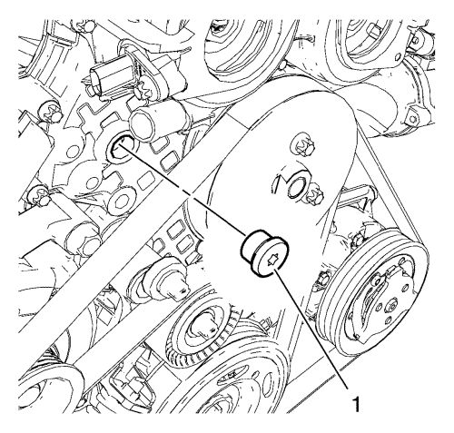
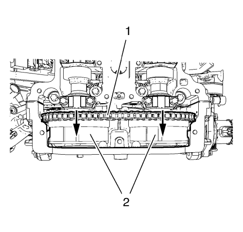
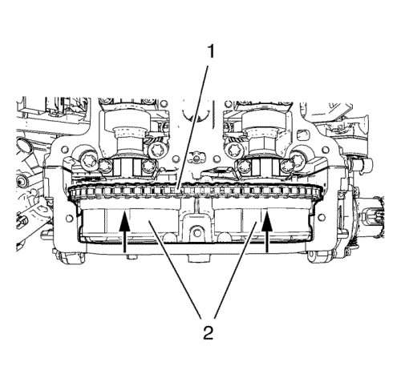

Sustitución de la culata — 1.4L LUH y LUJ
Herramientas especiales
| • | EN-470-B Llave de apriete angular |
| • | EN-953-A Herramienta de fijación |
| • | Pasador de fijación EN-955-1 del kit EN-955 |
Si desea informarse sobre herramientas regionales equivalentes, consultar Herramientas especiales .
Procedimiento de desmontaje
- Abra el capó.
- Desconecte el cable negativo de la batería. Consulte Desconexión y conexión del cable negativo de la batería → sin sistema de arranque/parada.
- Desmontar la pantalla de protección del motor.
- Extraiga el filtro de aire junto con el conducto de salida del purificador de aire. Consultar Sustitución del filtro de aire → 1.4L LUH y LUJ y Sustitución del conducto de salida del filtro de aire → 1.4L LUH y LUJ .
- Desmonte la tubería de ventilación positiva del cárter del cigüeñal. Consultar Sustitución del tubo/tubería/tubo flexible de ventilación positiva del cárter del cigüeñal .
- Desmonte el colector de admisión. Consulte Sustitución del colector de admisión → 1.4L LUH y LUJ.
- Desmonte el turbocompresor. Consultar Sustitución del turbocompresor .
- Desmonte el mazo de cables del módulo de control del motor (1) de la tapa del árbol de levas:
| • | Desconecte el enchufe (7) del mazo de cables del sensor de posición del árbol de levas de admisión |
| • | Desconecte el enchufe del mazo de cables de la válvula solenoide del actuador de posición del árbol de levas de admisión (6). |
| • | Desconecte el enchufe (4) del mazo de cables del sensor de posición del árbol de levas de escape |
| • | Desconecte el enchufe del mazo de cables de la válvula solenoide del actuador de posición del árbol de levas de escape (5). |
| • | Desconecte el enchufe del mazo de cables del sensor de temperatura de refrigerante del motor (3). |
| • | Desconecte el enchufe del mazo de cables del interruptor del indicador de presión del aceite del motor (2). |
| • | Suelte el mazo de cables (1) del módulo de control del motor de la tapa del árbol de levas. |
- Retire la abrazadera de tubo flexible de entrada del radiador de aceite y el tubo flexible de entrada del radiador de aceite (1).
- Retire la abrazadera del tubo flexible de entrada del radiador y el tubo flexible de entrada del radiador (4).
- Desmonte el tubo de purga de aire del refrigerante del motor (2).
- Desconecte el enchufe del mazo de cables del sensor de temperatura de refrigerante del motor (3).
- Retire el tubo flexible de entrada del calefactor de la salida de agua. Consultar Sustitución del tubo flexible de entrada del calefactor. → 2.0L Diésel LNP → 1.4L LUJ → 1.6L LDE, LXV y 1.8L 2H0 → 1.6L LXT y L2W → 2.0L Diésel LLW .
- Retire el tornillo del cable de masa (2) y el cable de masa (1).
- Desenganche la abrazadera del acoplamiento rápido del tubo flexible de salida del radiador (2).
- Retire el tubo flexible de salida (3) del radiador de la carcasa del termostato de refrigerante del motor (1).
- Coloque un recipiente colector debajo del vehículo.
- Desmonte el soporte de montaje del motor. Consultar Sustitución del soporte de montaje del motor - lado derecho .
- Desmontar la correa de accionamiento. Consultar Sustitución de la correa de accionamiento .
- Retire la polea de la bomba de agua. Consultar Desmontaje de la polea de la bomba de agua .
- Retire los 5 tornillos (1, 2) de la cubierta delantera del motor.
- Retire los 3 tornillos de la bomba de agua (3).
- Monte el soporte de montaje del motor. Consultar Sustitución del soporte de montaje del motor - lado derecho .
- Monte el soporte del motor. Consultar Sustitución del alojamiento del motor - lado derecho .
- Desmonte la bobina de encendido. Consultar Sustitución de la bobina de encendido .
- Desmontar la tapa del árbol de levas. Consulte Sustitución de la tapa de los árboles de levas → 1.4L LUH y LUJ.
- Ajuste el motor al PMS. Consulte Ajuste de la cadena de distribución del árbol de levas.
- Desmonte las 2 válvulas solenoides de los actuadores de posición del árbol de levas. Consultar Desmontaje de la válvula solenoide del actuador de posición del árbol de levas .

- Desmonte el tapón (1) del dispositivo tensor de la cadena de distribución de la cubierta delantera del motor.

Nota: Retire y vuelva a montar la herramienta de fijación EN-953-A para realizar este paso.
- Monte una llave (1) en el hexágono del árbol de levas de admisión y gírela en la dirección de la flecha para tensar la cadena de distribución y sujetarla.

- Instale el pasador (2) EN-955-1 en el orificio (1) del tensor de la cadena de distribución para fijarla en su sitio.
- Saque la llave del árbol de levas de admisión.

- Quite los 2 tornillos de la guía superior de la cadena de distribución (1).
- Quite la guía superior de la cadena de distribución (2).

- Afloje el tornillo del piñón del árbol de levas de admisión (2) mientras sujeta el hexágono del piñón del árbol de levas de admisión con una llave (1).
- Afloje el tornillo del piñón del árbol de levas de escape mientras lo sujeta con una llave.

- Desmonte los 2 tornillos del piñón del árbol de levas (2) y las 2 ruedas del excitador de posición del árbol de levas (1).

- Extraiga los 2 piñones del árbol de levas (2) junto con la cadena de distribución (1) y colóquelos en la cubierta delantera del motor.
- Afloje los 12 tornillos de la culata en el orden que se indica. Use el siguiente procedimiento:
| 39.1. | Afloje los tornillos de la culata 90°. |
| 39.2. | Afloje los tornillos de la culata 180°. |
- Desmonte y DESECHE los 12 tornillos de culata.
- Mueva un poco el conjunto de la culata hacia el cambio.
Nota: Tenga cuidado con el dispositivo tensor de la cadena de distribución y el pasador guía de la cadena de distribución.
Nota: Es necesario un segundo técnico.
- Retire el conjunto de la culata.
- Retire la junta de la culata.
- Desmonte las piezas de montaje de la culata:
| • | Retire la herramienta de fijación EN-953-A. |
| • | Desmonte los 3 soportes de elevación del motor. |
Procedimiento de montaje
- Monte las piezas de montaje de la culata:
| • | Monte los 3 soportes de elevación del motor. |
Precaución:Consulte Precaución con las fijaciones en la sección Prólogo.
| • | Monte los 3 tornillos del soporte de elevación del motor y apriételos a 22 N·m (16 lib. pie). |
| | Nota: Ajuste los árboles de levas con una llave hexagonal. |
| • | Monte la herramienta de fijación EN-953-A. |
- Corte los 2 labios de sellado de elastómero (1) de la junta de la cubierta delantera del motor.
- Doble hacia abajo la junta de la cubierta delantera del motor en los puntos de rotura predeterminados (flechas).
- Limpie las superficies de sellado de la cubierta delantera del motor y el bloque motor de grasa y material de sellado viejo.
- Compruebe si la superficie del bloque motor y la culata están lisas. Consultar Limpieza y comprobación de la culata y Limpieza e inspección del bloque del motor. .
Nota: La capa de masilla sellante debe tener un grosor de 2 mm (0,0787 pulg.).
- Aplique masilla sellante a las zonas (1). Consultar Adhesivos, líquidos, lubricantes y selladores .
Nota: Fíjese en la marca de la junta de la culata correspondiente al lado superior.
- Monte la junta de culata en el bloque motor.
- Monte los 2 tornillos de la cubierta delantera del motor (1) para guiar la junta superior nueva de la cubierta delantera del motor.
- Monte la junta superior nueva de la cubierta delantera del motor.
- Aplique masilla sellante a las zonas (2). La capa de masilla sellante debe tener un grosor de 2 mm (0,0787 pulg.).

Nota: Es necesario un segundo técnico. Meta el pasador guía de la cadena de distribución (2) en la guía y el dispositivo tensor de la cadena de distribución (1) con el pasador de fijación montado a través del orificio del tapón del dispositivo tensor de la cadena de distribución en la cubierta delantera del motor.
- Monte la culata (3).
- Monte, sin apretar, los 12 tornillos de culata NUEVOS.
- Ajuste la culata en la cubierta delantera del motor. Utilice un martillo de goma.
- Coloque provisionalmente la cubierta delantera del motor en la culata con 3 tornillos (1).
- Apriete los 3 tornillos (1) a 8 N·m (71 lib. pulg.)..
Precaución:Consulte Precaución de la fijación del par angular y estiramiento en la sección Prólogo.

- Apriete los tornillos de la culata en la secuencia indicada y en el siguiente orden:
| 16.1. | Apriete los tornillos de la culata con 35 N·m (26 lib. pie). |
| 16.2. | Apriete los pernos de la culata otros 180°. Utilice la llave EN-470-B. |
- Afloje los 3 tornillos de la cubierta delantera del motor.
- Monte los 5 tornillos restantes en la cubierta delantera del motor y la bomba de agua.
- Apriete los 5 tornillos (1, 2) de la cubierta delantera del motor a 8 N·m (71 lib. pulg.).
- Apriete los 3 tornillos (3) de la bomba de agua a 8 N·m (71 lib. pulg.).
- Desmonte el soporte de montaje del motor. Consultar Sustitución del soporte de montaje del motor - lado derecho .
- Coloque la polea de la bomba de agua. Consultar Montaje de polea de la bomba de agua .
- Monte la correa de accionamiento. Consultar Sustitución de la correa de accionamiento .
- Monte el soporte del alojamiento del motor. Consultar Sustitución del soporte de montaje del motor - lado derecho .
- Monte el soporte del motor. Consultar Sustitución del alojamiento del motor - lado derecho .

- Monte los 2 piñones del árbol de levas (2) junto con la cadena de distribución (1).
Nota: Las ruedas del excitador de posición del árbol de levas deben poder girar.
- Monte las 2 ruedas del excitador de posición del árbol de levas (1) y los 2 tornillos del piñón del árbol de levas (2).
- Ajuste el motor al PMS, apriete las ruedas del árbol de levas y monte la guía superior del dispositivo tensor de la cadena de distribución. Consultar Ajuste de la cadena de distribución del árbol de levas .
- Rote el cigüeñal 720° y compruebe nuevamente el calado de la distribución. Repita el procedimiento de ajuste si es necesario.
- Retire todas las herramientas especiales para el ajuste de la cadena de distribución y apriete el enchufe del dispositivo tensor de la cadena de distribución. Consultar Ajuste de la cadena de distribución del árbol de levas .
- Monte las 2 válvulas solenoides de los actuadores de posición de los árboles de levas. Consultar Montaje de la válvula solenoide del actuador de posición del árbol de levas .
- Monte la tapa del árbol de levas. Consulte Sustitución de la tapa de los árboles de levas → 1.4L LUH y LUJ.
- Monte la bobina de encendido y emborne el enchufe del mazo de cables de la bobina de encendido. Consultar Sustitución de la bobina de encendido .
- Acople el tubo flexible de salida del radiador (3) en la carcasa del termostato de refrigerante del motor (1). Enganche el acoplamiento rápido (2).
- Monte el cable de masa (1) y el tornillo del cable de masa (2) y apriételos hasta 20 N·m (15 lib. pie).
- Monte el tubo flexible de entrada del radiador (4) y la abrazadera del tubo flexible de entrada del radiador en la salida de agua.
- Monte el tubo flexible de entrada del radiador de aceite (1) y la abrazadera del tubo flexible de entrada del radiador de aceite en la salida de agua.
- Conecte el tubo flexible de purga de aire de refrigerante del motor (2) en la salida de agua.
- Emborne el enchufe del mazo de cables del sensor de temperatura de refrigerante del motor (3).
- Monte el tubo flexible de entrada del calefactor en la salida de agua. Consultar Sustitución del tubo flexible de entrada del calefactor. → 2.0L Diésel LNP → 1.4L LUJ → 1.6L LDE, LXV y 1.8L 2H0 → 1.6L LXT y L2W → 2.0L Diésel LLW .
- Instale el mazo de cables del módulo de control del motor en la tapa del árbol de levas:
| • | Enganche el mazo de cables del módulo de control del motor (1) en la tapa del árbol de levas: |
| • | Conecte el enchufe del mazo de cables del interruptor del indicador de presión del aceite del motor (2). |
| • | Emborne el enchufe del mazo de cables del sensor de temperatura de refrigerante del motor (3). |
| • | Conecte el enchufe del mazo de cables de la válvula solenoide del actuador de posición del árbol de levas de escape (5). |
| • | Conecte el enchufe (4) del mazo de cables del sensor de posición del árbol de levas de escape. |
| • | Conecte el enchufe del mazo de cables de la válvula solenoide del actuador de posición del árbol de levas de admisión (6). |
| • | Conecte el enchufe (7) del mazo de cables del sensor de posición del árbol de levas de admisión. |
- Monte el turbocompresor. Consultar Sustitución del turbocompresor .
- Monte el colector de admisión. Consulte Sustitución del colector de admisión → 1.4L LUH y LUJ.
- Monte el filtro de aire junto con el conducto de salida del purificador de aire. Consultar Sustitución del filtro de aire → 1.4L LUH y LUJ y Sustitución del conducto de salida del filtro de aire → 1.4L LUH y LUJ .
- Monte el protector del motor.
- Conecte el cable negativo de la batería. Consulte Desconexión y conexión del cable negativo de la batería → sin sistema de arranque/parada.
- Eche refrigerante. Consultar Drenaje y llenado del sistema de refrigeración .
- Compruebe y corrija el nivel de aceite del motor.
- Cierre el capó.
| © Copyright Chevrolet. All rights reserved |